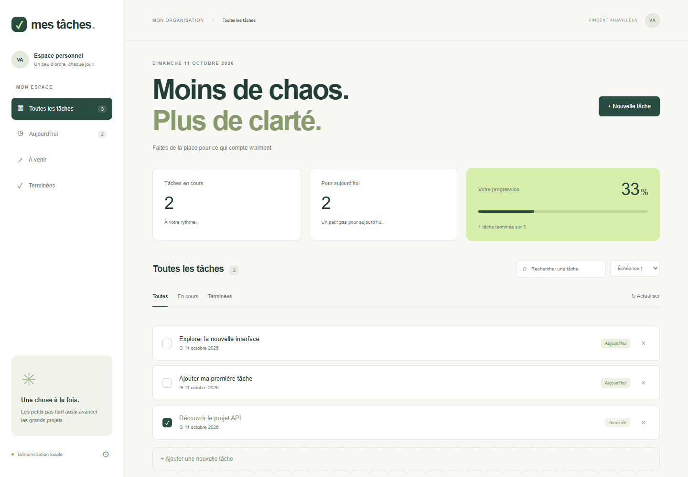

02 / APPLICATION WEB / API
To do list
Organiser les tâches et relier une interface à une API.

Le contexte
To do list est une application de gestion personnelle : ajout, suppression, validation et réouverture des tâches, avec dates limites.
Le périmètre
La refonte apporte une interface responsive, la recherche, les filtres, le tri et le suivi de progression. La démonstration fonctionne dans le navigateur ; le projet Python téléchargeable utilise une API FastAPI et une base SQLite.